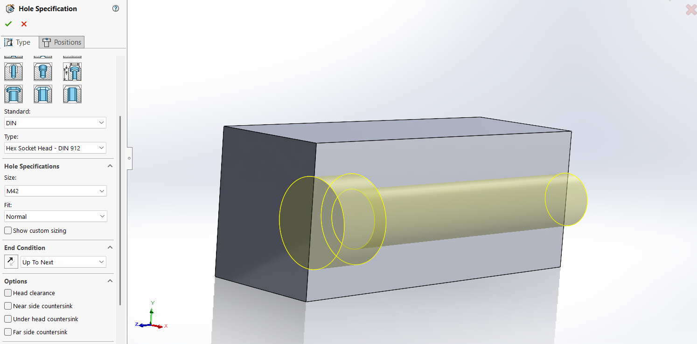

Anatomía de la Precisión: El Asistente para Taladro no es solo dibujo, es ingeniería para la fabricación

En el mundo del diseño asistido por ordenador (CAD), es frecuente caer en el error de considerar elementos como los agujeros como un simple rasgo geométrico o estético. Sin embargo, el diseño de un taladro es una de las decisiones primordiales que afectan a la viabilidad económica y física de un mecanizado.
El "Asistente para Taladro" (Hole Wizard) es una herramienta verdaderamente indispensable. Su objetivo clave no reside simplemente en eliminar material del modelo, sino en introducir el propio lenguaje de estandarización del taller directamente en el panel de diseño.
Las Cuatro Fases de la Precisión de un Taladro
📏 Fase 1: El Mandamiento de la Precisión
Todo empieza por el croquis. Ya sea sobre un plano en 2D en una sola cara, o mediante un croquis 3D para una perforación multicara simultánea en piezas complejas. Jamás se deben dejar puntos ubicados libremente. Es obligatorio emplear cotas inteligentes y relaciones de posición (por ejemplo, concéntrico) para anclar el agujero exactamente donde lo exigirá el montaje físico de la pieza real.
Fase 2: La Geometría – El Tipo
El ingeniero debe elegir el contorno y perfil que va a tener el corte en base al alojamiento deseado de la tornillería:
- Refrentado (Counterbore): Para ocultar las cabezas de tornillos hexagonales y mantener superficies lisas planas.
- Avellanado (Countersink): Ideal para montajes aerodinámicos de chapa sobre estructuras empleando tornillería de cabeza plana.
- Taladro Sencillo: Para holguras de paso donde fluirá el cuerpo del tornillo.
- Roscado (Tap): Representación cosmética, vital para no sobrecargar el rendimiento de renderización computacional delineando hélices físicas de rosca 3D.
Fase 3: El Cerebro – Los Estándares Industriales
Este es el motor de la universalidad técnica. Aquí el software fija la normativa matriz (ANSI Metric, ISO, DIN), mientras prevé el tipo de compatibilidad a establecer y ajusta automáticamente la tolerancia holgura-paso:
Suelto (loose) para encajes de menor rigidez intencionales, o cerrado (close) para ensambles de altísima precisión asumiendo un alto riesgo de fricción.
🔥 El Súper Tip de Oro: Síntesis de Profundidad
Gran parte de los accidentes por encallamiento de herramientas ocurren al mecanizar los denominados taladros ciegos (aquellos que no atraviesan la placa inferiormente).
Se debe aplicar una infalible regla empírica fundamental del torno y la fresadora: jamás se ha de extender o forzar una rosca hasta exactamente el fondo matemático del cono perforado. Aportar siempre, invariablemente, entre 2 y 3 mm ciegos de "desahogo" al diseñar en el CAD.
⚠️ Peligro de Rotura
Ese espacio libre proporciona un pequeño silo o contenedor base destinado a la re-circulación y acumulación inevitable de las virutas metálicas de corte. ¡No dejar ese fondo significa romper irremediablemente los machos de roscar!
Conclusión hacia la producción 2D
Diseñar previendo un agujero con esta directriz exime de cuellos de botella e interrupciones desastrosas al operario; lo mismo ocurre en la transcripción hacia Planos 2D. El modelo tridimensional conceptual finaliza en que, una vez estipulada íntegramente la tabla de decisiones de perforación de manera parametrizada, al exportar se conforma una sola anotación perfecta y automática exenta de errores tipográficos (p.ej: M6 x 1.0, Profundidad 15) listos para la puesta a nivel de la máquina-herramienta en el taller.
¿Necesitas ayuda con el diseño técnico?
En EST Ingenieros combinamos el conocimiento técnico de taller con el diseño 3D avanzado para ofrecerte soluciones industriales listas para producción.
Pedir Presupuesto